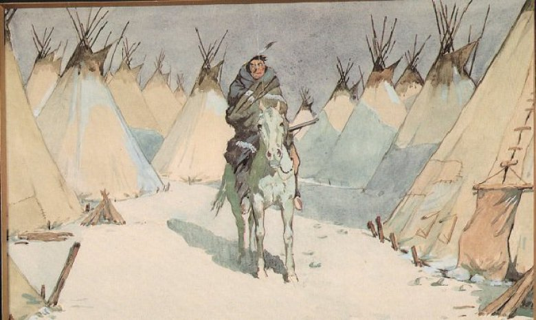

French Cinema
By 1910 the world of cinema was changing internationally in a way that seriously threatened the long-term hegemony of Pathé in
intenational markets, heavily reliant on its predominance in the vast US market. From 1908-1910 Pathé had pinned his hoped on
the ability of Edison and the MPPC to control that market in a way that would limit the high-risk production of feature films
and keep the reins securely in the hands of the small goup of companies that comprised of which Pathé itself was by a long way
the most important. By 1910 it was already beginning to become clear that this attempt was doomed (Pathé made frequent visits
to the US to keep himself informed on the situation) and that the more adventurous US independents, prepared to invest large
sums at high risk, were going to be the ultimate victors, in a manner wit which a non-US company, however well-implantd, was
going to have the greatest difficulty in competing.
From 1910 onwards, Pathé therefore prepares what might be described as a fall-back situation. Although Pathé had carefully prepared
the way for the production of feature films, it was a phenomeon with which he personally had little sympathy, whose continuing
importance he rather doubted and whose requirement for high-risk investment he had little taste for. This meant the creation of
alternative relatively low-risk sources of revenue whose popularity, in its own sphere, would be as great as that of the high-risk
features even if its profile was distinctly lower. In the fiction field this would involve the promotion of the serial (an area
however where Pathé ws both followed and outplayed by rivals Gaumont and Éclair). In the non-fiction domain, the most important
and most influential innovation was the introduction of the newsreel service, launched in 1908,although here there would inevitably soon
be competitors on all sides. The third area of low-risk investment, and the one where Pathé would enjoy its greatest success, was
the home-film market.In 1910 Pathé therefore commissioned engineer Pierre-Victor Continsouza (1872 - 1944) to create the first really
significant home-view system, the 28mm Pathé KOK projector which was patented in 1911 and would first go on the marketin 1912. The
The devlopment of the KOK had important implications for the fim repertoire that begin to become apparent in 1910-1911. Since the
KOK was considered to be particularly marketable to schools and other educational institutions, this had radical implications for
the film repertoire. The new emphasis given by Pathé to scientific and natural history films, but also to more educational travel
films and "industrial films, is part of an integrated policy in which the home-view projector plays a central role.New sections
were added to he catalogue in 1910 to prepare the way for this change - « vulgarisation scientifique », « scènes
instructives », « arts et uindustries ».
The distribution sector itself had been tranformed by the frenzy of cinema construction that had taken place since 1906, with the
encouragement of Pathé and of the influential Edmond Benôit-Lévy, so that Paris now boasted over a hundred cinemas nad provincial
towns were steadily following suit. The 900-seat Pathé Montpellier, pictured right, opened its doors on 6 January 1909. The design
by bordelais architect Hector Loubabé, incorporates a splendid cockerel that dominates the façade.
Alfred Machin, the photo-journalist sent to Africa by Pathé to make hunting films in 1907-1908 was back briefly in Europe in 1909 before
setiing out for a further and more serious cinematic tour of East Africa in 1910. He seems to have devoted his stay in Europe
to another "pilot" idea - the making of films in neighbouring Belgium and Holland. A series of short documentary films shot in
the almost preposterously picturesque fishing village of Volendam, just outside Amsterdam, are just peices of touristic nonsense
but the film he made just across the border in Evergem in Flanders in Belgium, working with otherwise unknown local actors, Le
Moulin maudit, is a startlingly dark fiction that would establish a breath-taking cinematic trope that would mark Belgian film-making
for ever - torture by windmill. In later years when Belgium was busily honing what would be its only other claim to cinematic
fame for the next twenty years - its role as everlasting war-victim, it would also remember and pay homage to this first stunning
little Belgian film by Alfred Machin.
At Gaumont,Louis Feuillade, with fewer resources, worked like a fury to keep broadening the company's repertoire and keep pace with
the giant competitor Pathé and maintain a respectable place for Gaumont in the increasingly important overseas market. With the
departure of Guy, Gaumont and Feuillade had put in place a director-unit system modelled on that of Pathé and by late 1910 it
also had its own rival to Pathé Journal in the form of Gaumont-Actualités edited by Henri Lefragette. The much-coveted
US market, where Gaumont now had an arrangement with the distrbutor George Kleine, was not considered very exigeant in terms of its
requirements, at least in regard to content. Gaumont, sending a note to Feuuillade on the subject, advised certainly of the need for
films de première classe but otherwise suggested avoiding the stronger meat thought suitable for European markets (« autant
que possible sans sang » and sticking to « scènes sentimentales […], grosses farces et gros comiques ». For the
European market, on the other hand, it was necessary to compete with the more up-market Pathé products associated with the rising
influence of the « film d'art » movement.
The most direct reponse, « Théâtro-Film » was launched in July 1909. It was apparently the brainschild of a Gaumont
director of whom we know next to nothing, Georges Lainé, a former stage actor and, at his fsuggestions, the film made were to be
directed by an experienced and distinguished sociétaire of the Comédie française, Maurice de Feraudy (1859-1932). Gaumont's
Il était certain que le Cinématographe qui, depuis des années, a fait déjà tant de progrès, ne pouvait échapper à l’évolution Théâtrale
vers la vie et vers la vérité. Le public qui, à l’heure actuelle, s’est passionné pour cet art si amusant, si curieux et si intéressant,
commence à se lasser un peu des mêmes scènes plutôt rapides et bousculées. Il demande aujourd’hui un effort nouveau, il veut placer
quelque chose de mieux, il est même plus mûr pour la compréhension de ces petites pièces et il réclame qu’elles comportent non plus
un fait, mais une histoire complète avec un développement d’idées exprimées avec une telle vérité, une si grande intensité d’expression
et une telle justesse que même sans le secours de la parole il s’en dégage de véritables sentiments. C’est de ce désir d’un Cinématographe
plus naturel, plus vivant et plus artistique, qu’est née la création du Théâtro-Film.
The cinematograph, although it has certainly made considerable progress over the year, cannot escape from the theatrical evolution
towards life and truth. The public, which delights at the present time in this amusing, curious and interesting art, has begun to
become a little tired of the same rather rapid and slapstick films and requires today a new effort to provide something better. It
has outgrown these liitle views and requires something that damatises not just a scene but a complete story with a development
in the ideas expressed combined with a truth and an intensity of expression, so tat, even without the aid of the spoken word, it is
capable of evoking real feelings. Form this desire for a more natural, more living and more artistic cinema that the idea for Théâtro-Film
was born.
Although some forty films appear to have been made in 1909-1910, when Gaumont announced the project pour l’instant en sommeil,
it does not seem to have been a great success, the "sleep" proved to be permanent and none of the films seem to have survived.
Nevertheless the objectives announced, both in respect of a more "artistic" cinema and a more "naturalistic" cinema were, and would
remain, important ones and became, in a more generalised way, just as important an aspect of Gaumont's repertoire, and particularly
of Feuillade's own work, as they already were at Pathé. The continual recourse to theatre was perhaps something of a false trail
(and unerlies many of the failure associated with the « film d'art » movement, but it had a certain metaphorical
value. As the biographer of Féraudy has pointed ut, it could be seen as an attempt to combine the traditional ideals of classic
theatre (« représenter la vie en beauté » with the demands of the "naturalistic" movement, associated in literature
Émile Zola and in the theatre with the work of André Antoine (« ramener la vie sur scène »). This was as important
an issue to the future of cinema as it was to the future of theatre.
with André
Bernard Bastide, to whose work (http://journals.openedition.org/1895/4082) I am indebted for much of the foregoing, distinguishes
various source-areas where these ideals influenced the Gaumont repertoire. I differ from him a little in my identification of
those sources but there is evidently a rise in the importance, on the "artistic" side, of films based on mythology, history and
legend as well as, on the "anturalistic" side of films, ignored by Bastide, based on Grand-Guignol plays (the "terror" genre) and
several films that already look forward to Feuillade's most determined experiment in naturalism, to bring real life onto the screen,
the « La Vie telle qu’elle est » series of 1911-13.
the comic series continued to progress, with Romé Bosetti creating a new series in the year, « Calino »,
featuring the former clown Clément Mégé (at least nine films in the year). Arnaud considerably expanded his repertoire during
the year, concentrating as much on drama as on comedy, but he had a very significant rival with the arrival of Léonce Perret.
Perret had been pursuing a career as an actor with rather variable success since the turn of the century and, while on tour
in Germany in 1909, was persuaded by the Gaumont representative there, one M. Grassi, to try his hand at cinema as both actor
and director.After making some films in Germany with Grassi, including seemingly the "pacifist" Pourquoi la guerre?,
I place the term between inverted commas, because supposedly "pacifist" films are in practise rarely quite as genuinely pacifist
as they seem. After this, Perret joined the Gaumont team in Paris.
Perret proved to be a film-maker of real flair and intelligence and, for the next few years, Gaumont films might almost be divided
into two distinct categories that coule be labelled "the Arnaud film" and "the Perret film". This is a shade unfair on étienne
Arnaud, who is no longer around to defend himself, especially a many films of the time are unascribed, but is a judgement based
on the works that survive known to be by each man. This can be best illustrated by compaing two rather simialar films - both biopics -
made by Perret and Arnaud at this time, Perret's Molière (1909) and Arnaud's André Chénier (1910). Both films begin,
as it happens, with scenes where the artists in question are reading their work to a group of admirers. Both have good décors (probably
the work of Robert-Jules Garnier, who became Gaumonts "chef décorateur in 1909, which provide a basis for good mise en scène,
that is to say, in neither case are they just "backdrops" to the action that can only be used like theatre-flats. Arnaud's awareness
of this is minimal. He simply spreads his actors, pretty much in a straight line, across the screen (and very exactly filling the
screen) and their involveemnt with the setting in which they are placed is negligible. No characters enter or exit; they are lll
(including Chénier) present from the outset. They simply arrange themselves across the screen in the course of the scene. There
is, that is to say, mo awareness of off-screen, no sense of a world beyond the little space presented.
Perret's use of the Garnier set for Molière is very differet and no doubt owes much to his own wide theatre experience, which
Artaud did not have. The scene (Molière's father's tapistry workshop) is one of bustle and movement from the word go. Only Molière
himself, at the front of the scene, writing ona low desk, remains still. Two bothers enter carrying a frame and, when they do gather
round, one goes right to the back of the scene to "keep guard". There is in fact a staircase beyond as we discover when the father
enters down it, causing a stir amongst the brothers and sisters who only return to listening to the play being written after the
father has exited through the main door at the back. Through this door, a sort of French-widow affair, we can also, throughout the
whole scene, activity in the street beyond. Here, then, we have a real awaraess of mise en scène, a strong sense of off-screen
and even an effect fo deeper focus (using the French-window behind) so that the performers are entirely involved within their
own context, aware of possible comings and going from two directions, and of a broader context of city-life which the audience
can glimpse beyond.
The second scene of André Chénier takes place in the Club des Feuillants where the much-maligned Dr. Guillotin is outlining
his design for a more humane (in the sense of being faster and surer) form of execution. The pattern is again the same. An even
larger cast of characters is present from the beginning, without entrances or exists. They extend themelves, if in a somewhat diffeernt
pattern, across the screen, very exactly from one side to the other. The scene does have a special interest because Chénier has
a vision of all the various auditors, mounting the scaffold to be executed. This is done by superimposition and, in this area,
Arnaud, who had worked a good deal with animator Émile Cohl, knows exactly what he is doing and dos it very successfully.
Lux
